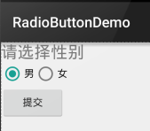

本节の導入：
本节では、Android基本UIコントロールのRadioButtonとCheckboxを紹介します。 まず、本节で解説する内容は、RadioButtonとCheckboxの以下の点です。
1.基本的な使い方
2.イベント処理；
3.クリック効果のカスタマイズ；
4.テキストと選択ボックスの相対位置の変更；
5.テキストと選択ボックスの距離の変更
実は、この2つのコントロールは多くの点で似ています。単一選択と複数選択、イベント処理以外は、他はすべて似ています！ また、ListView上でCheckboxの位置がずれる問題もありますが、この問題はListViewの章で解決します。 では、本节の内容を始めましょう～ 本节の公式ドキュメントAPI：RadioButton；CheckBox；
1.基本的な使い方とイベント処理：
1）RadioButton（ラジオボタン）
名前の通りラジオボタンは、1つだけしか選択できません。そのため、RadioButtonをRadioGroupボタングループの中に配置して、単一選択機能を実現する必要があります！まずRadioButtonの使い方を確認しましょう。簡単な性別選択の例です： また、外側のRadioGroupにorientation属性を設定して、RadioButtonの並び方を縦か横かに設定できます。
効果図：

PS：筆者のスマートフォンはAndroid 5.0.1です。ここのRadioButtonは旧バージョンのRadioButtonよりも少し見た目が良くなっています～
レイアウトコードは以下の通りです：
<LinearLayout xmlns:android="http://schemas.android.com/apk/res/android"
xmlns:tools="http://schemas.android.com/tools"
android:id="@+id/LinearLayout1"
android:layout_width="match_parent"
android:layout_height="match_parent"
android:orientation="vertical"
tools:context=".MainActivity" >
<TextView
android:layout_width="wrap_content"
android:layout_height="wrap_content"
android:text="请选择性别"
android:textSize="23dp"
/>
<RadioGroup
android:id="@+id/radioGroup"
android:layout_width="wrap_content"
android:layout_height="wrap_content"
android:orientation="horizontal">
<RadioButton
android:id="@+id/btnMan"
android:layout_width="wrap_content"
android:layout_height="wrap_content"
android:text="男"
android:checked="true"/>
<RadioButton
android:id="@+id/btnWoman"
android:layout_width="wrap_content"
android:layout_height="wrap_content"
android:text="女"/>
</RadioGroup>
<Button
android:id="@+id/btnpost"
android:layout_width="wrap_content"
android:layout_height="wrap_content"
android:text="提交"/>
</LinearLayout>
選択された値を取得する：
ここでは2つの方法があります。
1つ目はRadioButtonにイベントリスナーsetOnCheckChangeListenerを設定する方法です。
サンプルコードは以下の通りです：
RadioGroup radgroup = (RadioGroup) findViewById(R.id.radioGroup);
//第一种获得单选按钮值的方法
//为radioGroup设置一个监听器:setOnCheckedChanged()
radgroup.setOnCheckedChangeListener(new OnCheckedChangeListener() {
@Override
public void onCheckedChanged(RadioGroup group, int checkedId) {
RadioButton radbtn = (RadioButton) findViewById(checkedId);
Toast.makeText(getApplicationContext(), "按钮组值发生改变,你选了" + radbtn.getText(), Toast.LENGTH_LONG).show();
}
});
実行効果図：
PS：もう1点、必ず覚えておいてください。各RadioButtonにidを追加しないと、単一選択機能が動作しません！！！
2つ目の方法は、他のボタンをクリックして選択されているラジオボタンの値を取得する方法です。もちろん直接取得することもできます。これは要件次第です～
サンプルコードは以下の通りです：
Button btnchange = (Button) findViewById(R.id.btnpost);
RadioGroup radgroup = (RadioGroup) findViewById(R.id.radioGroup);
//为radioGroup设置一个监听器:setOnCheckedChanged()
btnchange.setOnClickListener(new OnClickListener() {
@Override
public void onClick(View v) {
for (int i = 0; i < radgroup.getChildCount(); i++) {
RadioButton rd = (RadioButton) radgroup.getChildAt(i);
if (rd.isChecked()) {
Toast.makeText(getApplicationContext(), "点击提交按钮,获取你选择的是:" + rd.getText(), Toast.LENGTH_LONG).show();
break;
}
}
}
});
実行効果図：
コード解説：ここでは送信ボタンにsetOnClickListenerイベントリスナーを設定しています。クリックするたびにRadioGroupを1回走査して、どのボタンが選択されているかを判定します。以下の方法でRadioButtonの関連情報を取得できます！
- getChildCount( )ボタングループ内のラジオボタンの数を取得します；
- getChinldAt(i):インデックス値に基づいてラジオボタンを取得します
- isChecked( ):ボタンが選択されているかどうかを判定します
2）CheckBox（チェックボックス）
名前の通りチェックボックスは、複数のオプションを同時に選択できます。選択された値を取得する方法も、同様に2つあります： 1.各CheckBoxにイベントを追加する：setOnCheckedChangeListener 2.ボタンを用意し、クリック後に各checkboxに対してisChecked()で判定する；
実行効果図：

実装コード：
public class MainActivity extends AppCompatActivity implements View.OnClickListener,CompoundButton.OnCheckedChangeListener{
private CheckBox cb_one;
private CheckBox cb_two;
private CheckBox cb_three;
private Button btn_send;
@Override
protected void onCreate(Bundle savedInstanceState) {
super.onCreate(savedInstanceState);
setContentView(R.layout.activity_main);
cb_one = (CheckBox) findViewById(R.id.cb_one);
cb_two = (CheckBox) findViewById(R.id.cb_two);
cb_three = (CheckBox) findViewById(R.id.cb_three);
btn_send = (Button) findViewById(R.id.btn_send);
cb_one.setOnCheckedChangeListener(this);
cb_two.setOnCheckedChangeListener(this);
cb_three.setOnCheckedChangeListener(this);
btn_send.setOnClickListener(this);
}
@Override
public void onCheckedChanged(CompoundButton compoundButton, boolean b) {
if(compoundButton.isChecked()) Toast.makeText(this,compoundButton.getText().toString(),Toast.LENGTH_SHORT).show();
}
@Override
public void onClick(View view) {
String choose = "";
if(cb_one.isChecked())choose += cb_one.getText().toString() + "";
if(cb_two.isChecked())choose += cb_two.getText().toString() + "";
if(cb_three.isChecked())choose += cb_three.getText().toString() + "";
Toast.makeText(this,choose,Toast.LENGTH_SHORT).show();
}
}
2.クリック効果のカスタマイズ
5.0以降のRadioButtonとCheckboxは旧バージョンよりも少し見た目が良くなりましたが、私たちにとってはまだ好みではないかもしれませんし、要件によっては独自のクリック効果が必要です！実装はとても簡単で、まずカスタムのselctorリソースを作成し、選択時と非選択時の切り替え画像を設定します～！
実装効果図は以下の通りです：

PS：ここでは素材の関係で、少し小さいです...
<?xml version="1.0" encoding="utf-8"?>
<selector xmlns:android="http://schemas.android.com/apk/res/android">
<item
android:state_enabled="true"
android:state_checked="true"
android:drawable="@mipmap/ic_checkbox_checked"/>
<item
android:state_enabled="true"
android:state_checked="false"
android:drawable="@mipmap/ic_checkbox_normal" />
</selector>
作成後、設定方法は2つあります。1つと言ってもいいでしょう！見てみればわかります～
①android:button属性を上記のselctorに設定する
android:button="@drawable/rad_btn_selctor"
②styleで属性を定義し、android style属性で設定します。まずstyleに以下のコードを追加します：
<style name="MyCheckBox" parent="@android:style/Widget.CompoundButton.CheckBox">
<item name="android:button">@drawable/rad_btn_selctor</item>
</style>
そしてレイアウト側は：
style="@style/MyCheckBox"
3.テキストと選択ボックスの相対位置を変更する
これも実装はとても簡単です。以前TextViewを学んだときに使ったdrawableXxxを覚えていますか？ 選択ボックスの位置を制御するには、2つの手順だけです！設定：
Step 1. android:button="@null"
Step 2. android:drawableTop="@android:drawable/btn_radio"
もちろんdrawableXxxを自分の好きな効果に置き換えることもできます！
4.テキストと選択ボックスの距離を変更する
場合によっては、テキストと選択ボックスの間の距離を調整して、少し窮屈に見えないようにしたいことがあります。その場合は：
1.XMLコードで制御する： android:paddingXxx = "xxx" を使用して距離を制御します
2.Javaコードでは、もう少し良い方法として、paddingLeftを動的に計算します！
サンプルコードは以下の通りです：
rb.setButtonDrawable(R.drawable.rad_btn_selctor); int rb_paddingLeft = getResources().getDrawable(R.mipmap.ic_checkbox_checked).getIntrinsicWidth()+5; rb.setPadding(rb_paddingLeft, 0, 0, 0);
本节のまとめ：
では、RadioButtonとCheckboxについてはここまでです。何か間違っている点、良くない点、または良い提案があれば、ぜひ指摘してください。 大変感謝します～ありがとう...